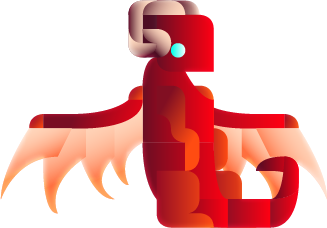
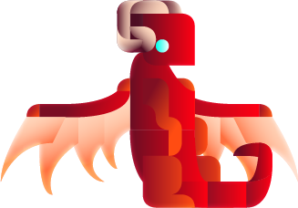

불 요소를 상징하는 용으로 몸 전체의 베이스를 붉은 색으로
설정해보았습니다.
눈은 몸과 반대로 푸른 불꽃과 붉은 색에 대비되는 색감을
표현했습니다.
자연 요소를 상징하는 용으로 몸 전체의 베이스를 자연의 초록색과 바람의 상징을 뜻하는 푸른 색을 날개에 입혀보았습니다.
주황색 눈은 태양 빛을 담은 듯한 느낌을 의도했습니다.
물 요소를 상징하는 용으로 자연 용과 모티브가 겹치지 않게 컬러에 차이를 두며 설정해보았습니다.
바다를 상징하는 듯한 몸과 미지의 공간에 대한 위험과 경고를 뜻하는 붉은 눈을 매치해보았습니다.
어둠 요소를 상징하는 용으로 대표적인 블랙을 몸 전체에 입히되 몸의 가장자리 부분에 화이트를 그래디언트로 입혀 자칫 지루할 수 있는 조합에 어둠 속 먼지처럼 색을 표현해보았습니다.
눈은 심판자임을 나타내주는 영롱한 황금색과 황혼의 이미지를 떠올렸을 때 가장 대표적인 짙은 네이비를 날개 끝부분에 입혔습니다.
Adobe illustrator의 격자에 기반하여 시각적 특성을 살리되 단순한 도형을 활용해서 드래곤을 표현했습니다.